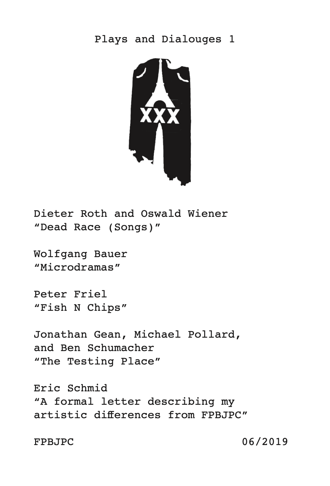

Book with first time English translations of Dieter Roth and Oswald Wiener's "Tote Rennen (Lieder)" LP and Wolfgang Bauer's "Microdramas", as well as audio dramas from FPBJPC, and a formal letter of resignation from the group by Eric Schmid. 4.915” x 7.25”, black and white, 208 pages, Edition of 200